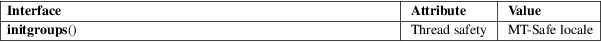

initgroups − initialize the supplementary group access list
Standard C library (libc, −lc)
#include
<sys/types.h>
#include <grp.h>
int initgroups(const char *user, gid_t group);
Feature Test Macro Requirements for glibc (see feature_test_macros(7)):
initgroups():
Since glibc 2.19:
_DEFAULT_SOURCE
glibc 2.19 and earlier:
_BSD_SOURCE
The initgroups() function initializes the group access list by reading the group database /etc/group and using all groups of which user is a member. The additional group group is also added to the list.
The user argument must be non-NULL.
The initgroups() function returns 0 on success. On error, −1 is returned, and errno is set to indicate the error.
|
ENOMEM |
Insufficient memory to allocate group information structure. | ||
|
EPERM |
The calling process has insufficient privilege. See the underlying system call setgroups(2). |
/etc/group
group database file
For an explanation of the terms used in this section, see attributes(7).

None.
SVr4, 4.3BSD.
getgroups(2), setgroups(2), credentials(7)